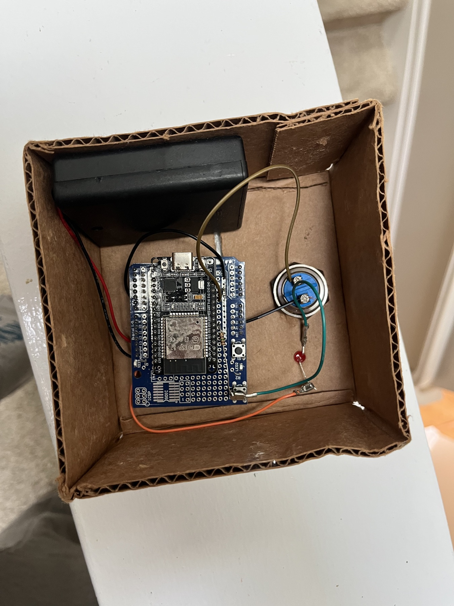
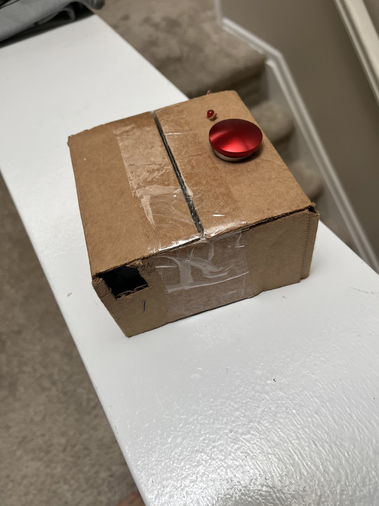

ESP32 button box
A Wi-Fi-connected microcontroller, push button, and status light provide a simple physical interface.
Project 05
A one-button ESP32 device that helps locate a misplaced iPhone without requiring another phone or computer.

The project began with a common problem: a misplaced phone and no second device nearby to use Find My iPhone. I wanted to create a dedicated solution that required only one physical button and no additional phone, computer, or login.
A Wi-Fi-connected microcontroller, push button, and status light provide a simple physical interface.
A Cloudflare Worker converts the device request into an email with the subject line “Bing.”
An iPhone automation responds by maximizing the phone’s sound and visual alerts.

The ESP32 firmware uses edge detection so one button press produces one request, even if the button remains held. A non-blocking timer controls the indicator light, and the HTTP client uses a timeout so a slow server cannot stall the device indefinitely. Credentials are replaced with placeholders below and are not stored in the portfolio.
#include <WiFi.h>
#include <HTTPClient.h>
#define BUTTON 14
#define LIGHT 22
#define LIGHT_DURATION_MS 5000
const char* ssid = "YOUR_WIFI_SSID";
const char* password = "YOUR_WIFI_PASSWORD";
const char* webhookUrl = "https://YOUR-WORKER.workers.dev/";
const char* secretKey = "YOUR_SECRET_KEY";
bool lastButtonState = HIGH;
unsigned long lightOffAt = 0;
void setup() {
pinMode(BUTTON, INPUT_PULLUP);
pinMode(LIGHT, OUTPUT);
Serial.begin(115200);
WiFi.begin(ssid, password);
unsigned long startedAt = millis();
while (WiFi.status() != WL_CONNECTED &&
millis() - startedAt < 15000) {
delay(100);
}
if (WiFi.status() == WL_CONNECTED) {
for (int i = 0; i < 3; i++) {
digitalWrite(LIGHT, HIGH);
delay(100);
digitalWrite(LIGHT, LOW);
delay(100);
}
}
}
void loop() {
unsigned long now = millis();
int buttonState = digitalRead(BUTTON);
if (lastButtonState == HIGH && buttonState == LOW) {
digitalWrite(LIGHT, HIGH);
lightOffAt = now + LIGHT_DURATION_MS;
sendWebhook();
}
lastButtonState = buttonState;
if (lightOffAt != 0 && now >= lightOffAt) {
digitalWrite(LIGHT, LOW);
lightOffAt = 0;
}
}
void sendWebhook() {
if (WiFi.status() != WL_CONNECTED) return;
HTTPClient http;
http.setTimeout(2000);
http.begin(webhookUrl);
http.addHeader("X-Custom-Auth", secretKey);
int responseCode = http.GET();
Serial.printf("Response Code: %d\n", responseCode);
http.end();
}The current build proves the end-to-end interaction from a physical button to a phone alert. The next step is to design and 3D print a finished housing that protects the electronics, secures the button and light, and creates a compact device that can remain in a consistent location at home.